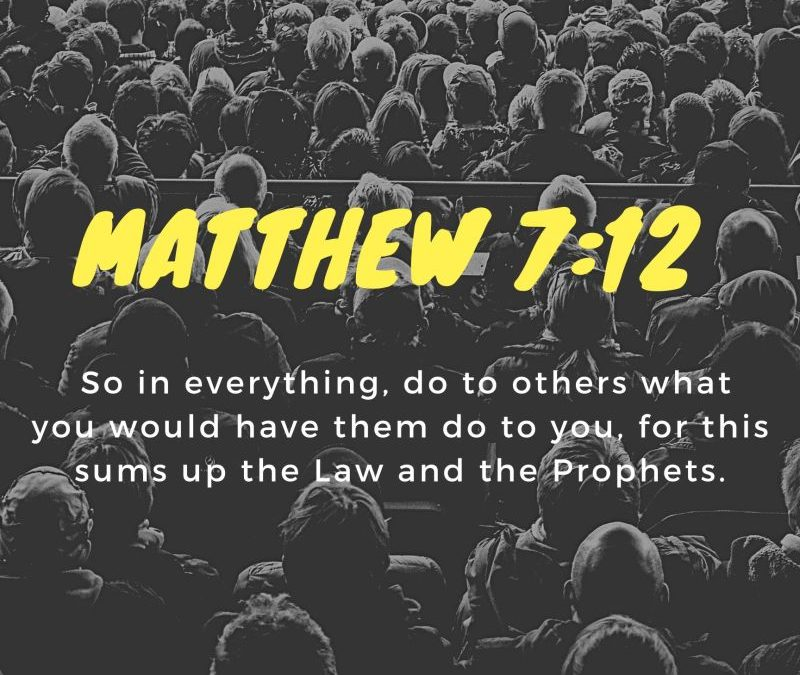
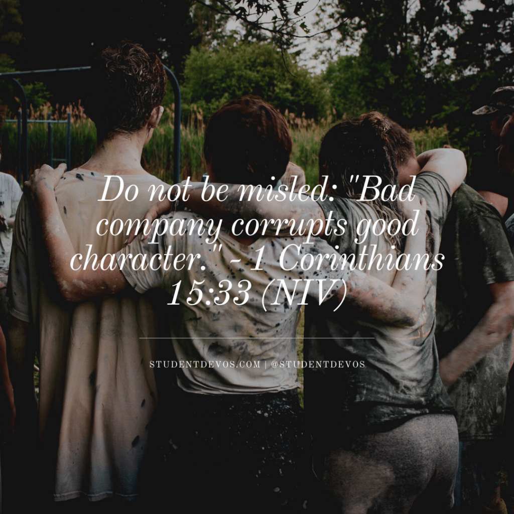

Our society is built on a principle of give and take, if we want to receive something, we must offer something of equal value in return. In this way, individuals are called to treat others with respect, in faith that it will be returned. It is not only in the interest of the individual, but society as a whole, because treating others as we wish to be treated benefits everyone. When faced with disrespect, our goal should not be to retaliate, but to respond with respect, trusting that it will eventually be returned as it is part of our ethical duty to always respond with kindness.
The People we are around end up influencing our ethics and moral integrity. Individuals who engage in unethical behavior lack virture and erode our moral compass, surrounding oneself with people of character and virute reinforces our virtures. Ones social condtions plays a key role in shaping their decisions as well, continuous exposure to negativity can desensitize individuals into wrongdoing. Ethical behavior is often sustained through accountability, which is strengthened in environments abundant honesty and justice. A student who is influenced and disciplined by peers is more likely to uphold academic integrity, just as an employee surrounded by unethical colleagues may feel pressured to compromise their values. This verse serves as a timeless reminder that being intentional about one’s company is essential for maintaining integrity and moral uprightness.
